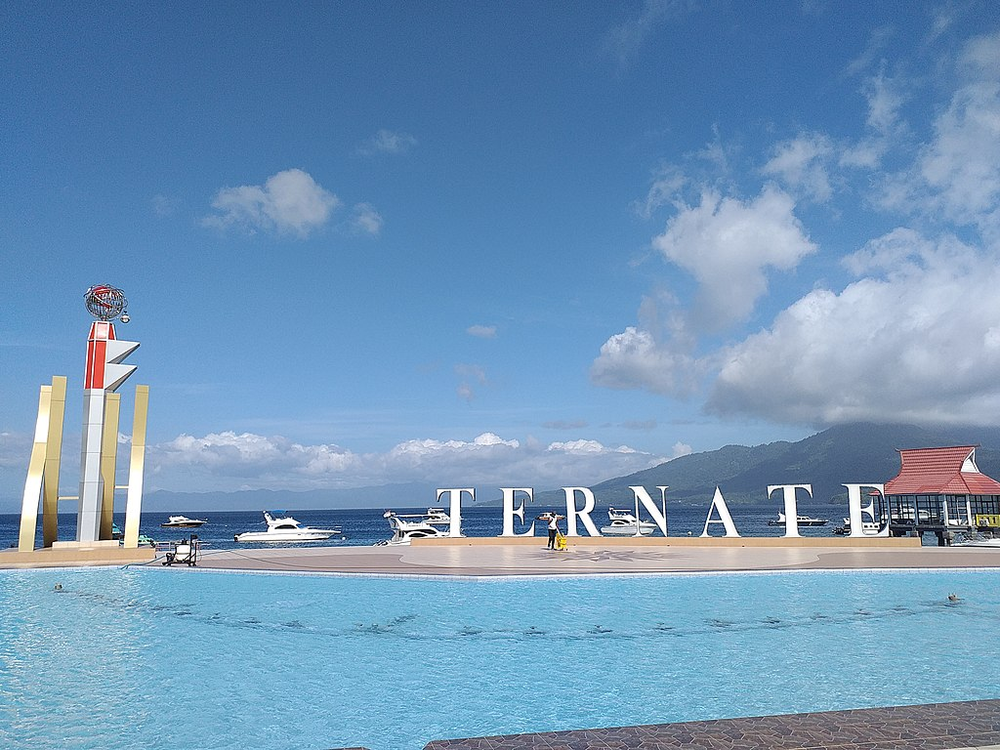
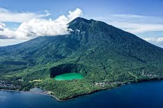

Sejarah

Ternate adalah salah satu kesultanan Islam tertua di Indonesia,
didirikan pada abad ke-13. Sebagai pusat perdagangan rempah-rempah,
khususnya cengkeh, Ternate menjadi kekuatan besar di Maluku. Pada
abad ke-16, Ternate mencapai puncak kejayaannya di bawah Sultan
Baabullah, yang mengusir Portugis pada 1575 setelah pembunuhan
Sultan Khairun.
Selama era kolonial, Ternate dikuasai oleh Belanda melalui monopoli
rempah-rempah. Meskipun pengaruh politiknya menurun, Kesultanan
Ternate tetap berperan penting dalam menjaga budaya dan tradisi
lokal hingga kini.
Geografis

Ternate adalah pulau vulkanik di Maluku Utara, Indonesia, yang
dikelilingi perairan Laut Maluku. Pulau ini memiliki gunung berapi
aktif, Gunung Gamalama, sebagai puncak tertinggi. Letaknya strategis
di jalur perdagangan, dekat dengan Pulau Halmahera. Luasnya sekitar
111,39 km², dengan pesisir yang didominasi pantai berbatu dan
perairan yang kaya sumber daya laut.
Wisata
Ternate menawarkan beragam destinasi wisata yang memadukan keindahan
alam dan kekayaan sejarah. Salah satu daya tariknya adalah Danau
Tolire, sebuah danau vulkanik yang indah dan penuh legenda. Untuk
pecinta pantai, Pantai Sulamadaha dengan airnya yang jernih menjadi
tempat ideal untuk snorkeling. Gunung berapi Gamalama juga menjadi
tujuan mendaki populer dengan panorama spektakuler. Selain keindahan
alam, Ternate memiliki warisan sejarah yang kaya, seperti Keraton
Kesultanan Ternate, yang menyimpan peninggalan budaya kesultanan,
serta benteng-benteng peninggalan kolonial seperti Benteng Tolukko
dan Benteng Oranje.
Perpaduan ini menjadikan Ternate tujuan wisata yang unik dan
menarik.Ternate menawarkan beragam destinasi wisata yang memadukan
keindahan alam dan kekayaan sejarah. Salah satu daya tariknya adalah
Danau Tolire, sebuah danau vulkanik yang indah dan penuh legenda.
Untuk pecinta pantai, Pantai Sulamadaha dengan airnya yang jernih
menjadi tempat ideal untuk snorkeling. Gunung berapi Gamalama juga
menjadi tujuan mendaki populer dengan panorama spektakuler. Selain
keindahan alam, Ternate memiliki warisan sejarah yang kaya, seperti
Keraton Kesultanan Ternate, yang menyimpan peninggalan budaya
kesultanan, serta benteng-benteng peninggalan kolonial seperti
Benteng Tolukko dan Benteng Oranje. Perpaduan ini menjadikan Ternate
tujuan wisata yang unik dan menarik.